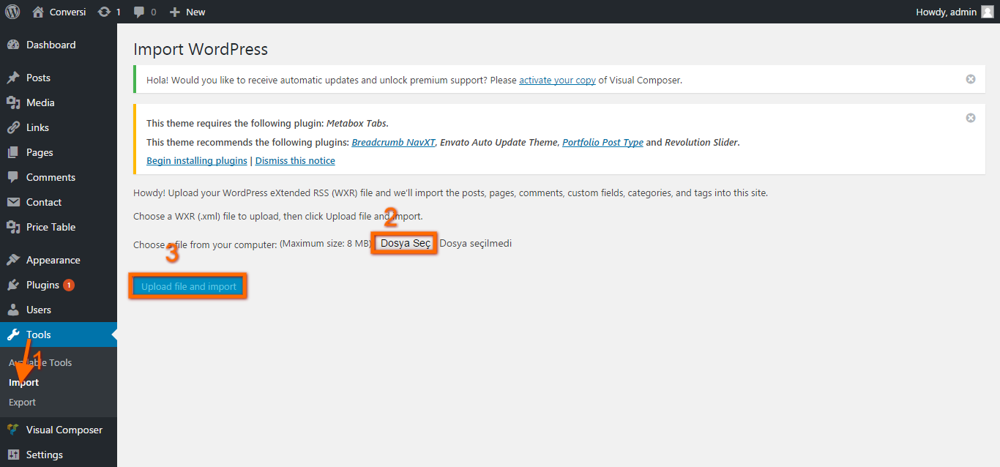
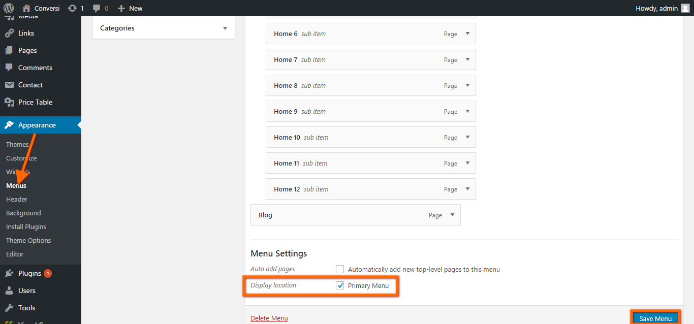
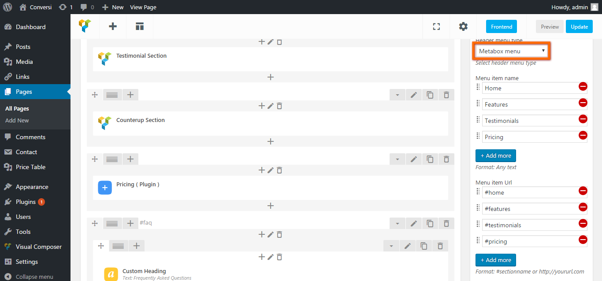
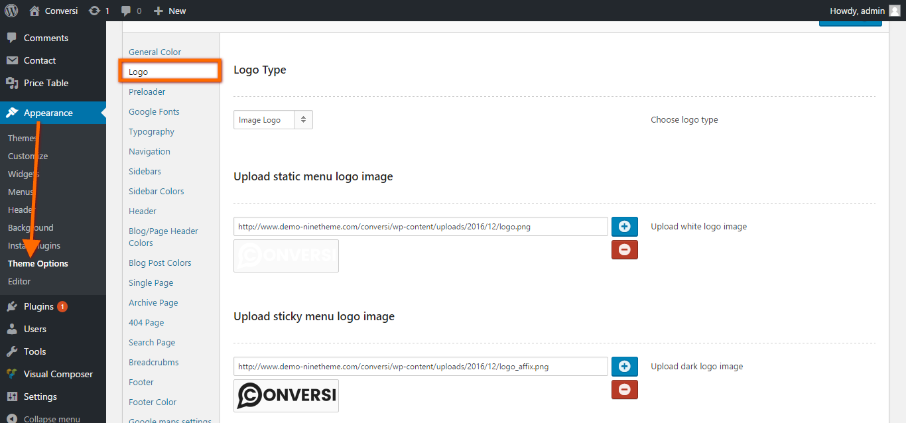
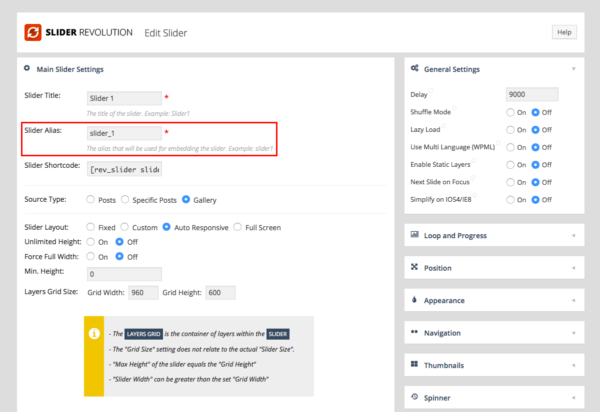
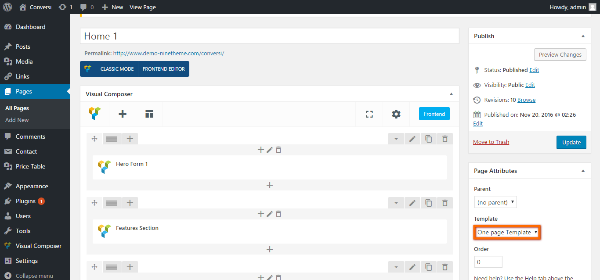
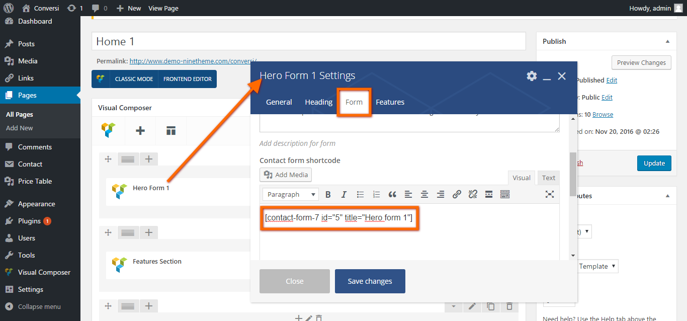
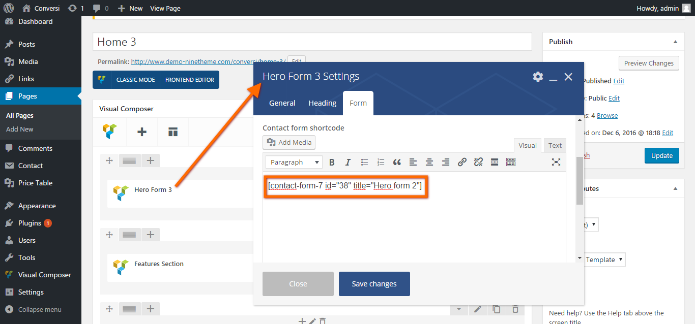

02.5Import XML demodata
NOTE : In theme theme, all the pages, media, images etc come with importing the demodata. If you don't, you'll have no content in your website.
Please follow the following instructions in order to import your xml demodata
Dashboard > Tool > Import > WordPress > Select your file.
02.6Setting Up Front and Blog Page
To set up the Frontpage, you must first create a new page with no content inside it, you can do so by navigating to
Pages > Add New.
You can give this page a title of "Frontpage" Under the page attributes section,
Select Page Template As Front Page Template and Click "Publish".
Once you have created your new page:
- Go to Settings > Reading
- Select A static page from Front page displays section
- Select frontpage for Front page
- Select Blog for Posts page
02.7 Theme Partials
In our theme, we tried to make it easier the customizability providing much options in the theme partials section. You can find both menu and logo in the header area, while you can find the social icons, widgets in the footer area and also you're able to find the sidebar options in the theme options. In this section, we're going to show you how to add these options providing images to make it more understandable.
02.8Add Menu
The Usage of Primary Menu : In Converse, you can use the primary menu so easy. What you need to do first is going to Pages > Home Here, at the bottom of the page, you should select the Primary Menu under the title of Home-Pages Menu Options. Once you selected the primary menu in the metabox area, please go to Appearance > Menu , where you can add your menu items. After adding your menu items, please make sure that you've saved after your editiions. Besides, you can select your menu position to be on the right side or top side in the mebox area as well. Please take a look at the following image to get the point well.
The Usage of Metabox Menu : In Conversi, the way to use the metabox is simple too. What you need to do first is going to Pages > Home Here, at the bottom of the page ( in the metabox area ), you should select the Metabox Menu under the title of Home-Pages Menu Options. Once you selected the Metabox Menu in the metabox area, you'll see a new field for the metabox menu items. Please take a look at the following image to get the point well.
02.9Add Header Logo
In the theme, you can find the available logo in the theme options. If you would like to add your own logo, all you need to is just going to Appearance > Theme Options > General Config / Header Logo. Here, you need to make sure that the visibility of your logo is On.
02.11 Widgets
Adding widgets is simple. Browser to Appearance > Widgets and drag and drop your widgets into your footer Columns. The default Footer is composed of Widgets which you can add via Appearance > Widgets. You can also completely style and select your options for your footer via the Customizer. Look at the following images.
NOTE : You should in keep mind that you can add your contact form. What you need to do is copy-paste the shortcode of the contact form and drap-drop the ' text 'into the related area as already shown in the images provided below.
02.12Install Revolution Slider
If the theme has a revolution slider and you would like to use the same revolution slider like the demo, what you need to do is much simpler. Just go to the Admin > Slider Revolution > Import ( Here, you should select the demodata of the revolution slider and import it ).
NOTE : If you would like to install your own revolution slider, you can do it following the instructions below in a simple way.
Locating Your Slider Shortcode
As you create sliders using the Revolution Slider or Layer Slider plugin, a unique shortcode is created for each.
To find the shortcode simply click on the Revolution Slider link in your WordPress dashboard. Each slider and it’s shortcode is listed in the order you created or imported them.
02.13PAGE TEMPLATES
Onepage Template Type
If you would like add a new page into your page, all you need to is just to select the Unlimited Template under the page attributes. Otherwise, you'll get a broken page in your website. After process, you can add this newly created page to your menu. If you like, you can add your newly created page in both the Metabox Menu, which is in the metabox area or in the Primary Menu, which is in the Appearance > Menu . We'll explain the detail for the menu in the next section of the documentation.
Full Width Template Type
This template structure doesn't contain neither sidebar nor any of the part of a page. Instead, this template just considering your empty page needs.
03.1Header Options
In our theme, our header area is consist of a kind of features including menu, logo, which we'd already talked about previously and also revolution slider as well. Even though it is most likely to see the header options in the theme options, it's also possible to provide some available options in the metabox area in the home page. By the way, better to keep in mind that some options may take place in the theme options. Now, in the following, we're going to explain each of the available features in the header area step by step.
- MENU : You can see the menu that we use in the header area. As we already said that you can add your menu in the Appearance > menu or in the metabox area
- LOGO : You can add your logo in the theme options
03.2Footer Options
As we mentioned about that footer area comes up as default. However, the features in the footer area must be provided with option to make it looks nice. In the theme the footer option allows you to insert widgets, social icons, copyright text, shortcodes and more. You can find the footer options in the Appearance > Theme Options. At the following, we'll explain the available features and how to use in a simple and short way.
04.2Add Hero Form 1
The first thing you need to do is to go to Pages > frontpage > Hero Form 1 Shortcode Then, copy the shortcode of the hero form and paste into the related arae in the hero form shortcode.
Frontpage Contact Form 1 code:
In case of facing any kind of problems related to the contact form, please check the following contact form documentation carefully.
Click Here For The Contact Form 7 Documentation04.3Add Hero Form 2
The first thing you need to do is to go to Pages > frontpage > Hero Form 2 Shortcode Then, copy the shortcode of the hero form and paste into the related arae in the hero form shortcode.
Frontpage Contact Form 2 code:
In case of facing any kind of problems related to the contact form, please check the following contact form documentation carefully.
Click Here For The Contact Form 7 Documentation04.4Add Hero Form 3
The first thing you need to do is to go to Pages > frontpage > Hero Form 3 Shortcode Then, copy the shortcode of the hero form and paste into the related arae in the hero form shortcode.
Frontpage Contact Form 3 code:
In case of facing any kind of problems related to the contact form, please check the following contact form documentation carefully.
Click Here For The Contact Form 7 Documentation05Post Formats
This theme makes use of all of WordPress' 10 post formats to give you plenty of ways to show content in the top section of your articles. You choose type by selecting format in the "Format" box on the right side when you edit or add a new post. Depending on which format you select, new options will appear below the large text field.
Here is how to use each one of the formats, and what each one does:
-
Gallery - Shows all images attached to the post as a slider at the top of the article. More details how to use will appear below once selected.

Note : If you want to show an image in the article below the slider, but still not include it in the slider, you need to go to Media > Add New and upload it there. Then go back to the post and insert it. Make sure it's not attached to the post.
- Video - Shows an embed video at the top of the article. Fields for link embed or code embed will appear once selected.
You can show self-hosted videos in this field, although it's not intentionally supported, by using HTML5-video tags in the Embed Code field.

06Theme Settings ( Theme Options )
First, we should know that options are the main pillar of a theme. In other words, theme options are the backbone of a theme. This is the section, where you have full control over your website and can customize as you wish and besides, you do not have to able to know about coding. The major groups of options you can set in the theme are the Theme Options. Here, in Conversi, you have a variety of options regarding the theme including socials, widgetize options etc.
 Included:
Included:
General Config
- Footer height option
- Frontpage banner section option for class name, don't forget please.
- Logo upload
- Favicons upload
- Custom css
Google Fonts : You can select any fonts you wish for your website. On the other hand, you can use the following plugin for fonts as well. Click Me.
Theme color : There are a variety of color options provided and you select each as you wish.
Theme sidebars :You can select the sidebar for each of your page
Header / logo options : Upload blog pages parallax background image and header logo options
Meta Tags : You can make the widgetize area on or of based on your desire.
Footer : As said that you can edit the footer area including social, copyright
02.14 Child Theme
Why You Should Be Using Child Themes
Creating a child theme when performing adjustments to your theme’s code can save you a lot of future headache. Child themes allow you to make changes without affecting the original theme’s code, which makes it easy to update your parent theme without erasing your changes. By creating a child theme, you create a separate set of files that you can use to customize the theme without affecting the original theme at all. Not only does this make updating easier, it also makes sure that you will never ruin your original theme as you are never actually modifying the files. You can always turn off your child theme and fall back on the original. Click Me To Create A Child Theme
07Woocomerce options
After install woocommerce plugin you need to set woocommerce pages. Woocommerce page settings here : appereance - theme options. If you want to add woocommerce widgets go here : appereance - widgets
08Translate theme
9Visual Composer Shortcodes
The theme has been created with the help of shortcodes, which means that you are able to change the order of sections without code information required. You can find the shortcode in the Pages > Homepage ( Here, you can find the shortcode that create the frontpage )
Frontpage Shortcode

10How to Design Your Website
In Conversi, you're able to modify your website using css codes. You can change/modify each of the available elements thanking to the css codes. Lets say, for example, that you would like to change the color one of your element, you can do it easly and also save your time as well. If you're not much more familiar with using css, please take a look deeply at the following link and video to learn how to design your website using css codes.
11Conversi icons
In Conversi, we have a variety of icons listed under the Font Awesome.You can use all icons after family prefix, example :fa fa-pencil , copy paste pencil name.
NOTE : Please keep in mind that you must use lowercase when writing the icon's name. For ex. fa fa-Twitter ( WRONG ), instead fa fa-twitter ( CORRECT )
12Theme problems
1- Question : Where is the register form ?
2- Question : Why footer is looking broken ?
3- Question : There are gaps in the page, why ?
4- Question : How to create popup contact form ?
5- Question : I did everything like in the documentation but menu is invisible?
Solution: Please go to Admin - pages - frontpage and click update
6- Problem : There is a gray area in footer
Solution: Go to appereance -> Theme Options -> Footer and turn off the widgitize footer section
7- Problem : I can not load the demodata or some images.
Solution:Check your server settings or contact service provider. Some hosts block the demodata.
8- Problem : I can nor edit the frontpage.
Solution: You can not change 'frontpage' or frontpage's name in Conversi. Check your 'reading settings' from admin area.
9- Problem : I did al updates and did fresh installaiton but there are some allignment issues.
Solution:Please install latest version of theme. Check your 'Theme Options'. Update your theme via FTP or Wordpress Toolkit.
10- Problem : There is an empty area in frontpage.
Solution: Please check your Visual Composer settings.
11- problem :I have a horizantal scroll bar under the browser.
solution: If you have a horizantal scroll bar under the browser,you can get rid of this problem by applying these settings.Update your theme via FTP or Wordpress Toolkit.
12- problem :How can change the logo setting.
Solution: Please checkTheme Options > Header Logo Options
13- problem :How can I add a section to the frontend
Solution: You can create a page ( must be selected as frontpage section ) and you can control it via primary menu drag and drop function. You must select a page section type in the metabox area ( bottom of page content editor area ).
14- problem :I cannot edit the content of my pages anymore. Why ?
Solution: Plz make sure that you have the latest version of visual composer.
15- problem :How can I edit my social icons, logo etc ?
Solution: Plz go to Admin > Appearance > Theme Options
16- problem :Even though, I have imported Demo Data, I still can see not my page in frontend just like the demo Conversi on Ninetheme
Solution: Please make sure that you have select Frontpage for your frontpage and select Blog for your post in your static pages. If not, plz go to Admin > Setting >Reading > Select Frontpage and Blog.
17- problem :How can I add contact form into the footer area?
Solution: Please go to Appearance > Widgets. (Here, you should get the shortcode of your contact form on 'Contact' and put it into the widget)
18- problem :How can I change the color of an element or dislay an element?
Solution: All you need to do is just get the name of the related class and coding the color and add to css area in Theme Options
For Example:your-class-name { color:#fffff; display:none; }
19- problem :Why I cannot see my content of the sections at frontend?
Solution: Plz make sure that you've filled all the related field in shortcodes on Admin > Pages
20- problem :I use the 3rd demo but would like to use the second header. How can I do that?
Solution: You can use any header you want. There area five types of header in the shortcodes named Fronpage Header 1, Fronpage Header 2, Fronpage Header 3, Fronpage Header 4 and Fronpage Header 5. You can replace any of this within your theme.
13Additional Information
Extra information that you may find useful.
Font Awesome and other font (icon) issues?
If you have trouble with Font Awesome showing strange characters instead of icons, you are most likely using a CDN or external host in some way for the font files. Certain browsers may have issues with that, as they follow certain web standards. (Also make sure that your font files were uploaded correctly, and empty caches)
This can be fixed with for example this sample .htaccess file from MaxCDN. If you wish to read more about this, it relates to CORS headers.
Useful plugins
Many common problems or missing features can usually be solved with plugins. Here is a list of some great ones.
- Regenerate Thumbnails - A must-have when changing theme or thumbnail sizes
- WordPress Importer - Import XML file data for the website
- WP-PageNavi - Better pagination for your blog
- Contact Form 7 - A simple and flexible contact form plugin
- W3 Total Cache - Cache plugin to speed up your website
- Easy Add Thumbnail - Auto-set featured images for old as well as new posts
- Facebook Thumb Fixer - Make sure articles shared on Facebook and Google+ shows the right thumbnail images
- Responsive Lightbox - Easily add responsive lightboxes to your website and gallery images
- SyntaxHighlighter Evolved - Post code in your articles in a visually pleasing way
- WooCommerce - Sell stuff
Recommended theme editing software
- Firefox - The web browser of choice for me, although there are many good ones
- Firebug - Inspect code directly in the web browser. Lite version for Chrome here. Search on YouTube for video tutorials and you will quickly learn how to use it.
- PoEdit - Translate your theme. Read how to translate here.
- Notepad++ - A great text editor to modify theme code
- FileZilla - Modify or upload theme files via FTP
Link Resources
Learn more and ask about WordPress' standard features. WordPress is in itself an extremely well-documented open platform. It is recommended to search for answers via Google / DuckDuckGo first if you have questions – it almost always give useful information or at least point you in the right direction.
- WordPress.com Documentation - Quick and simple guides to standard features
- WordPress.org Codex - Documentation and great code examples
- WordPress.org Forums - Support for WordPress
- WordPress Code Answers - Ask and find great answers to code questions
- Ninetheme support videos - Find answers from all over the web. Always good.
- Revolution slider docs
- Contact form 7 tutorial
- Yellow Pencil - Visual Style Editor For WordPress!
- Visual CSS Style Editor - Easily customize WordPress websites, live. Google Fonts, Backgrounds, Animations and more!
- Speed up WordPress - 15 Easy Ways To Speed Up WordPress !
13.1Troubleshooting 101
Do you have a problem with your theme? This quick troubleshooting guide should be the first thing to check through - it will help you find the root cause of the issue.
A WordPress website issue can come from mainly one of 4 areas:
- Conflicting plugins
- Broken WordPress install
- Incorrect server setup
- The theme itself
Lets find out where your issue is coming from!
Step 1: Check your plugins
The first thing to do is to see if you have any plugins installed. Do you? If so, go to your admin panel and disable all of them. Now, go back to your site and see if the issue remains. If the problem is gone, then re-activate your plugins one-by-one and check the site between each activation. This way you will directly find the plugin(s) that cause problems.
If your issue remains even with all plugins disabled, go on to the next step.
Step 2: Check your customizations
Have you customized your theme in any way before you noticed the issue? If so, go to the theme demo website of the theme and see if you find the same issue there. If you can not see the issue there, you need to take a look at your customized code and find what may be wrong.
Step 3: Is the issue admin panel related?
If you have problems with media uploads, errors in the WordPress dashboard or other access issues, the likely cause is either an incorrectly setup server or a broken WordPress install.
To see if your problem is related to a broken WordPress install or an incorrect server setup, simply activate a WordPress default theme such as Twenty Twelve. Does the issue remain? Then your issue is not theme related. If the issue goes away with a default theme active, then it's most likely theme related.
- Do you think your issue is WordPress related? Re-installing WordPress may be a good idea, or asking for help on the wordpress.org forums.
- Do you think your issue is server related? Try some Google-searching for the issue, or contact your server provider about it.
- Do you think the issue is coming from the theme? Make sure to read this documentation through. If the issue remains and you are certain it's coming from the theme, feel free to report the bug on the wordpress.org support forums for hueman.
Note: Remember cache!
If you apply/repair code to fix issues but see no changes on your website when you save it, check if your website has any cache plugin activated. If so, make sure to empty all caches. Also force-refresh the page when viewing it by pressing F5.
13.2Theme Update service
Low price service for customers who don't want make mistake while updating theme.$15
Includes; setup theme, setup demodata and all theme settings.$24
Includes; installing Worpress, creating database.$45
If you would like to add any features that non exist in the theme, you can hire an expert among our team. The prices may change from $15 to $24
13.3Learn-WordPress
As you can already imagine that it's becoming an obligatory to have the cotroll over the modification in your theme. So in this regard, if you would like to be able to understand the way how the wordpress work, you better to have a look at the following link.
You can read description on this plugin. Click Me here to learn WordPress
NOTE : Almost all of our customer keep asking us to make some modification including changing color, which may not be provided in the theme options so for these kind of problem, using the chrome css editor is the greatest way to make any change you wish. Here, all you need to do is just take the name of the element you want to change and paste the code in the custom css area provided in the theme options. You can also take a look at the following video to get the point well.
NOTE : In the following video, you'll learn how to add different type of fonts for your layout.
NOTE : In the following video, you'll learn how to add google font into your website
NOTE : In the following video, you'll learn how to add Revolution Slider into your website
NOTE : In the following video, you'll learn how to add woocommerce plugin into your website
If this is your first-time install or if you use the wordpress.org version of the theme, you can skip this step.
It is a good idea to keep your theme up to date with the latest version, as it often includes important bugfixes or new neat features. If a new version of the theme is available, do the following steps to update it:
- Download the latest version.
- Locate the
theme-file-name.zipfile to upload. - Go to Appearance > Themes in the WordPress menu
- Activate a default theme temporarily, such as Twenty Twelve (to be able to delete your current theme)
- Click on the theme you wish to update, and press the red delete link bottom right. Your admin panel options should remain saved.
- Upload the new
theme-file-name.zip, as you did on first-time install, and activate it. - Learn more how to use child themes here.
You are now running the latest and best version of the theme!
Important: If you haven't used a child theme for your theme customizations, you must do the following steps before each update:
- Backup your custom.css file if you have used it, it will be overwritten and needs to be re-added after the update.
- Backup your additional language files if you have created/modified any, they will be removed and need to be re-added after the update.
- Backup any other custom code.
13.4How To Use Plugins
In our theme, we've used a broad of plugins, which are used commonly and makes you able to customize your website in a simple way and looks nice as well. You can find the plugins that we used within our theme at the following list.
- Visual Composer Click Me to Learn How to Use Visual Composer plugin
- Contact Form 7 Click Me to Learn How to Use Contact Form 7
- Meta Box Click Me to Learn How to Use Meta Box
- Slider Revolution Click Me to Learn How to Use Revolution Slider
- Portfolio Post Type Click Me to Learn How to Use Portfolio Post Type
- Team Post Type Click Me to Learn How to Use Team Post Type
- Price Manager Click Me to Learn How to Use Prica Manager
- Envato WordPress Toolkit Click Me to Learn How to Use Envato Toolkit
- Conversi Shortcode
NOTE : The three plugins ( Team, Portfolio, Price ) work in the same way. Here, you need to do is first make sure that you make these plugins active and then going to the Team, for example, in the dashboard menu and add items as many as you wish and finally, you can use it in any page you want with the help of shortcodes. The same thing for the both price and portfolio as well.
14Ninetheme Support Center
Again, thank you for purchasing Conversi. If you need some help, or support please use email or contact form via themeforest profile site. Hope you happy with the theme, all the best with your business.
You can ask your question on: Ninetheme Support
If you want to rate it: Conversi Page